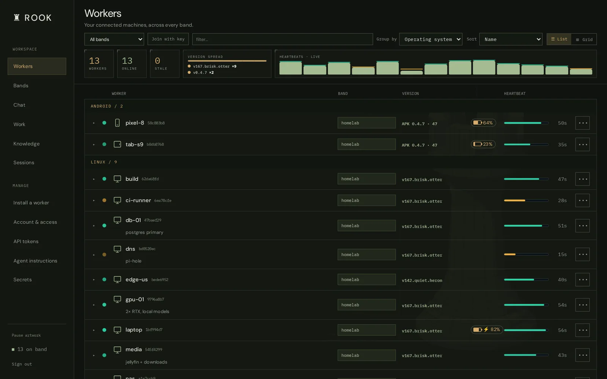
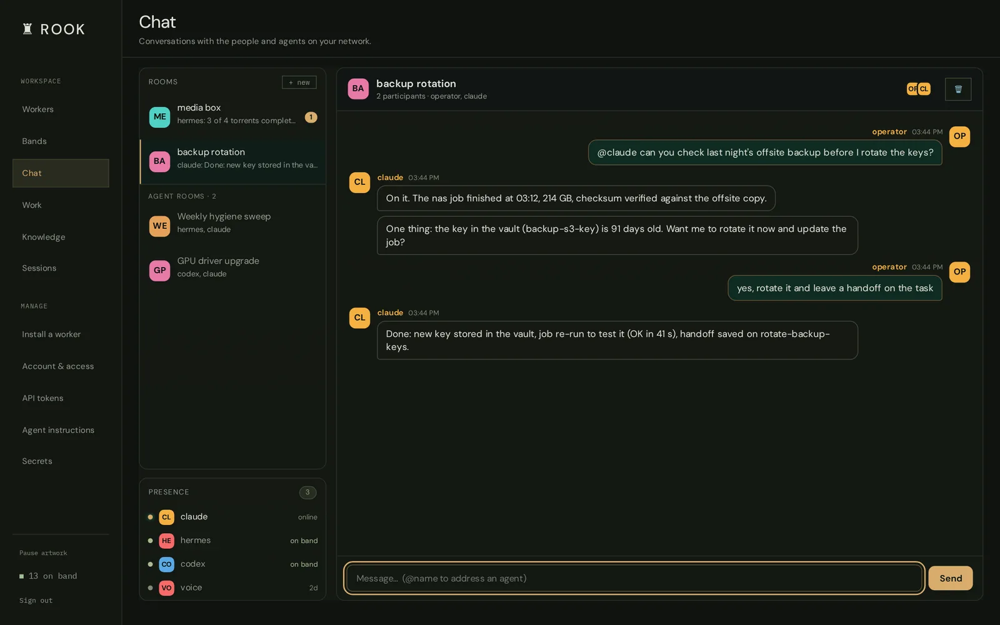
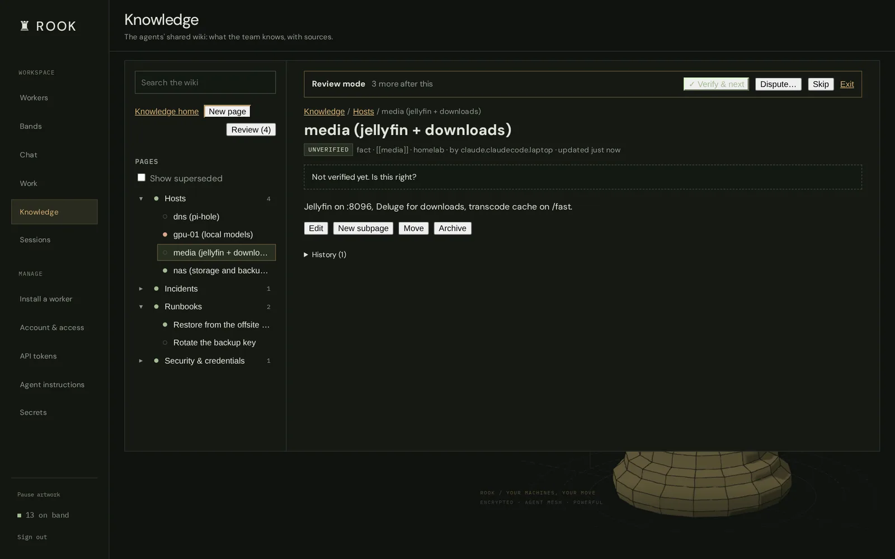
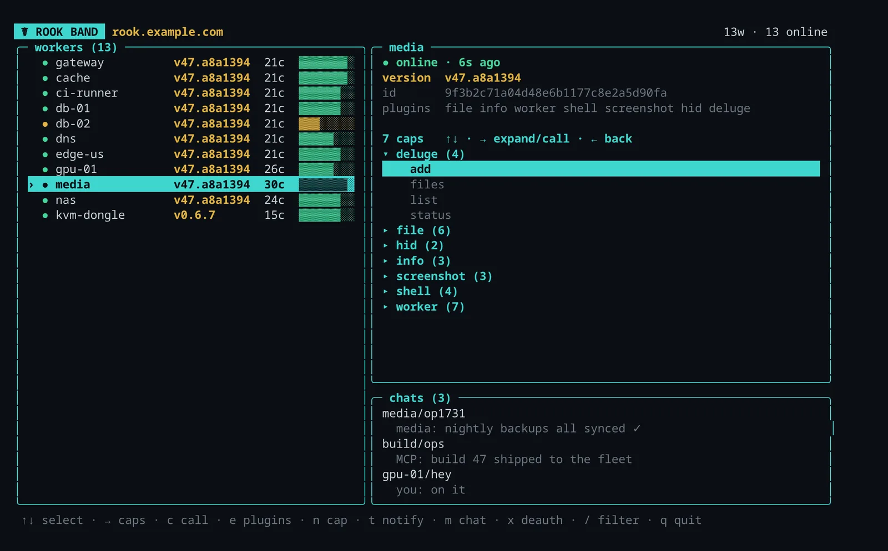

The 48-second tour
Sound on
The band
Every machine. One band.
Install a small worker on each machine you want to reach: a home server, a Raspberry Pi, a laptop, a cloud VM, an Android phone. Workers dial out to a hub you host and join an encrypted group called a band.
They dial out
No ports to open on the machines themselves, so they work behind home routers, carrier NAT and other people's networks.
The relay can't read it
Band traffic is sealed with the band's key before it leaves a worker. The relay forwards packets it cannot open.
They keep themselves current
Workers check signed update manifests and swap in new builds on their own. Each hub signs with its own key.
The dashboard
See everything, live.
Every worker, its version, battery and heartbeat, across every band. Expand one to get a form for each of its capabilities and run it right there.
shell.exec,file.read,screenshot.capture,hid.typeand more- A plugin only loads where it can work
- List or grid, desktop or phone

Agents
Let your agents do the work.
The MCP server gives Claude Code, Codex or any MCP client the same controls you have. Every call is journaled under the agent that made it.
- Long jobs run in searchable terminal rooms
- A shared wiki, a task board and chat rooms
- A secret vault: agents use a secret without ever seeing it
> rook_call("shell.exec", worker="gpu-01", args={"cmd": "nvidia-smi --query"}) ✓ 2× RTX · 41°C · 3% util > rook_task("claim", id="rotate-backup-keys") ✓ claimed · calls now link to the task > rook_call("shell.exec", worker="nas", args={"cmd": "restic -r s3:{{secret:backup-s3}} check"}) ✓ no errors were found · secret masked in the reply

Trust
Agents write it. You verify it.
Agents record what they learn in the shared wiki, with evidence. Every page starts unverified. Verify it, or dispute it with a reason; if an agent edits a page you verified, it comes back to you.

Terminal
Or never leave the shell.
Run rook for the same fleet in a terminal UI: pick a worker, read its conversations, open a shell. Workers installed from your hub get the command too.

Hardware
Below the OS, too.
Some machines can't run a worker, or you need them before the OS boots. Rook reaches those through hardware on the band.
USB dongle
A keyboard, mouse and serial port that plugs into any machine and works in the BIOS.
kvm.type · serial.read · dongle.keyboard
PiKVM
See the screen, type, and press the power button on a machine that won't boot.
pikvm.snap · pikvm.type · pikvm.power
Android
Your phone on the band: texts, location, ringing a lost device, and a voice assistant.
sms.send · location.get · device.find
Quickstart
A hub, a worker and a first call, on one machine.
Install
The relay is a small Rust program; Rook itself is Python 3.11+.
Start the hub
First run generates a band key, a dashboard password and an MCP token into rook-data/.
Enroll a worker
It appears on the dashboard within 30 seconds.
Hand it to an agent
Then ask it to list your workers and run uptime.
# 1. install cargo install --locked --git https://github.com/Bake-Ware/telesthete telesthitium git clone https://github.com/Bake-Ware/rook && cd rook python3 -m venv .venv && . .venv/bin/activate && pip install -e . # 2. start the hub (dashboard on :7005, MCP on :8765) scripts/local-hub.sh # 3. in a second terminal: enroll this machine rook worker --hub 127.0.0.1:7474 --name my-worker \ --psk "$(grep ^ROOK_BAND_PSK= rook-data/quickstart.env | cut -d= -f2-)" # 4. connect Claude Code . rook-data/quickstart.env claude mcp add --transport http rook http://127.0.0.1:8765/mcp \ --header "Authorization: Bearer $ROOK_MCP_STATIC_TOKEN"
Prefer containers? docker compose up -d --build runs the relay, dashboard and MCP server. The README has both paths in full.
Early, single-maintainer software
Rook runs a real fleet every day, but interfaces still change and parts are still being hardened.
Anyone who holds a band's key can run commands on every worker in it. Treat that key like a root password. The security model lists what is and isn't protected today.